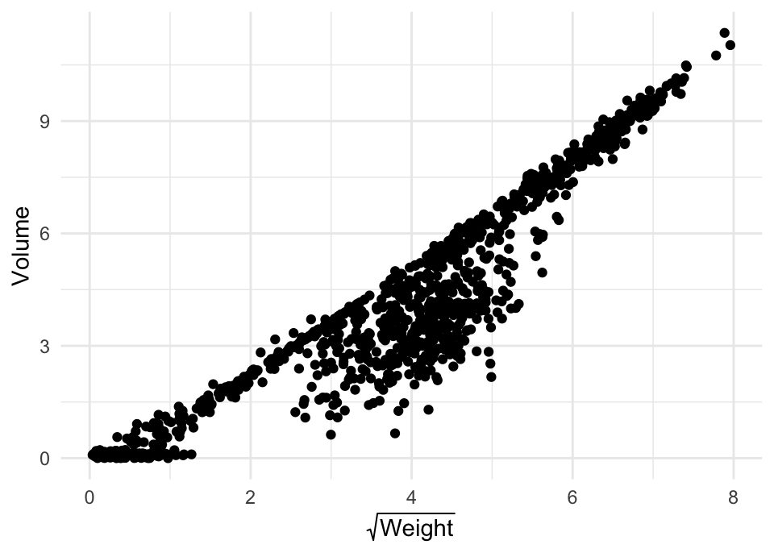
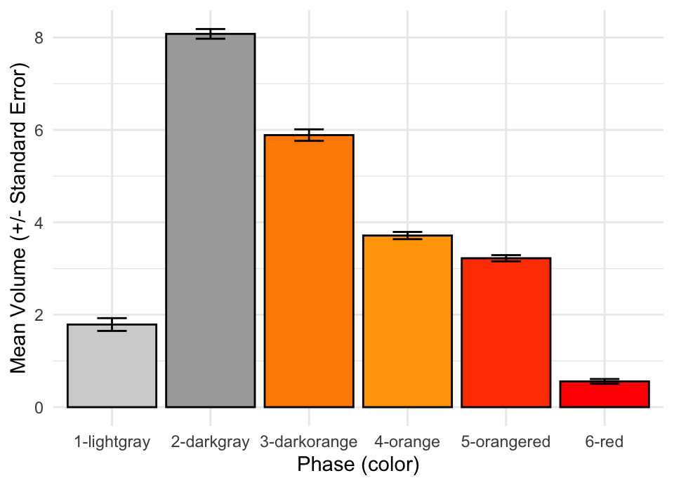

mutate()group_by()summarise()We will continue to talk about things covered in Chapter 5, this time sections 5.5 - 5.7.
Check out this blog
post if you would like to see some animations showing how
group_by(), summarise() and
mutate() work. Note that the examples use the “new” pipe
(|>), which works exactly the same way as
%>%.
The kableExtra package is great for styling tables
created by for example summarise(). Information about this
package can be found here.
The session 5 homework is below. All code solutions should be completed using one (sometimes rather long) pipeline.
Recreate the code to make the plot below. Make sure your code
includes the fix we talked about during the Thursday session to correct
the Weight observations made by raID-07.

Use group_by() and mutate() to
calculate the median Volume per Observer, and call the new column
median_Volume.
Find the largest Volume measurement per phase, using
group_by(), summarise() and
max().
How many observations per phase has a Weight less than 10 grams?
Mean-center (subtract the mean from all the individual
observations) the Weight variable (corrected). What is the
mean of this new variable?
Mean-center the Volume variable for each phase separately.
Recreate the plot below, but instead of asking
geom_bar() and geom_errorbar() to calculate
the mean and the standard error, calculate these values yourself using
group_by() and summarise(). Once these summary
statistics are calculated, pipe to ggplot() and add the
code necessary to produce the plot. Use google to figure out how to
calculate standard errors and how to use pre-calculated values with
geom_bar() and geom_errorbar().

Using the plot above as a starting point, create two new plots; one with errorbars representing the median absolute deviation and one with errorbars representing 95% confidence intervals (Hint: 95% CIs are calculated by multiplying the standard error with a certain constant).
During session 4, we talked about how to use the DT
package to create interactive tables in R markdown. These are perhaps
most suited for large tables where showing all information would be
problematic without the ability to produced paged, clickable tables.
Many times when working in R we produce smaller tables, which is often
the case when working group_by() and
summarise() for example. Out of the box, these tables don’t
look very good when knitting a html document. Check the resources and
see if you can reproduce the code necessary to make the table below.
|
Phase (color) |
mean |
stdev |
n |
|---|---|---|---|
|
1-lightgray |
1.79 |
1.95 |
199 |
|
2-darkgray |
8.08 |
1.49 |
202 |
|
3-darkorange |
5.89 |
1.77 |
199 |
|
4-orange |
3.71 |
1.09 |
196 |
|
5-orangered |
3.22 |
0.94 |
199 |
|
6-red |
0.56 |
0.72 |
191 |
Calculate the difference in mean Volume between observations
younger than the median age and observations older than the median age.
The diff() function might be useful in this case.
Calculate the minimum Volume for each cloudbuddy and phase. Next,
calculate the mean of all the minimum values you just generated (the
output should contain one value only). You might want to check out
chapter 5.6.6 in the R4DS text book to figure out how to get things to
run properly. Does it make a difference if you remove NAs in the
beginning of the pipeline using filter(), if you use
na.rm = TRUE when calculating the minimum values, or if you
use na.rm = TRUE when calculating the mean? Pay attention
to messages produced (warnings and such) when trying the three different
options. Explain any differences you see in the output.